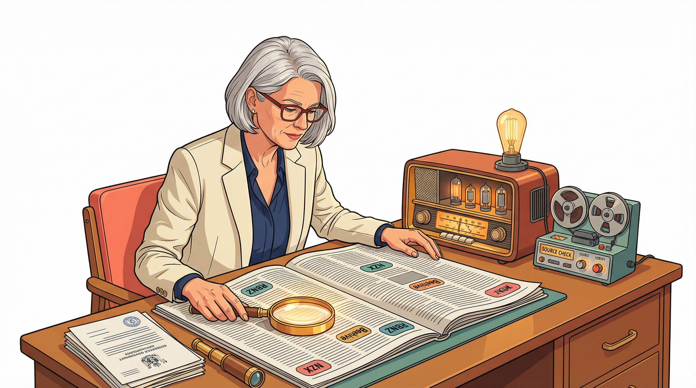

<!-- L5 S1: Primary Sources and AI — Section Banner -->
<div style="position: relative; width: 100%; max-width: 1200px; margin: 0 auto;">
  

  <!-- Left edge fade — blending left-side white into illustration -->
  <div style="position: absolute; top: 0; left: 0; width: 50px; height: 100%; background: linear-gradient(to right, #ffffff, transparent); pointer-events: none;"></div>

  <!-- Right edge fade — blending right-side white into illustration -->
  <div style="position: absolute; top: 0; right: 0; width: 50px; height: 100%; background: linear-gradient(to left, #ffffff, transparent); pointer-events: none;"></div>

  <!-- Corner fades — standard defensive blending -->
  <div style="position: absolute; top: 0; left: 0; width: 120px; height: 80px; background: radial-gradient(ellipse at top left, #ffffff 0%, transparent 70%); pointer-events: none;"></div>
  <div style="position: absolute; top: 0; right: 0; width: 120px; height: 80px; background: radial-gradient(ellipse at top right, #ffffff 0%, transparent 70%); pointer-events: none;"></div>
  <div style="position: absolute; bottom: 0; left: 0; width: 120px; height: 80px; background: radial-gradient(ellipse at bottom left, #ffffff 0%, transparent 70%); pointer-events: none;"></div>
  <div style="position: absolute; bottom: 0; right: 0; width: 120px; height: 80px; background: radial-gradient(ellipse at bottom right, #ffffff 0%, transparent 70%); pointer-events: none;"></div>

  <!-- Oswald heading overlay — positioned in pure white top band -->
  <div style="position: absolute; top: 8%; left: 50%; transform: translateX(-50%);">
    <h2 style="font-family: Oswald, sans-serif; font-size: 36px; font-weight: 700; color: #222; text-transform: uppercase; letter-spacing: 0.04em; margin: 0; white-space: nowrap;">Primary Sources and AI</h2>
  </div>
</div>
